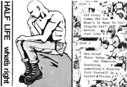

1985— the noise becomes music

In 1985, Blair left, Mike and Jeff got Rick and Ron on
guitar and drums, respectively, giving us:
- Jeff Lamm-vocals
- Mike LaVella-bass
- Mike Michalski-guitar
- Rick Dowdle-Guitar
- Ron Volpe-Drums
This crew produced some pretty decent material, and as Rick
was a big fan of the heavy British bands, took a step away from the
Flipper-esque proto-noise found in the first set.
All ages gigs became common with our general refusal to play
bar shows and a desire to play for the kids who formed the majority of the
crowd.
At this point the What's Right cassette was recorded. Steve
Heineman (my bandmate from Real Enemy and White Wreckage) and I were involved
with the recording, and I play on several of the songs. Mike Michalski left,
and I joined at that time. That put the line up at:
- Jeff Lamm-vocals
- Mike LaVella-bass
- Vinny Curtis-guitar
- Rick Dowdle-guitar
- Ron Volpe-drums
This version played some pretty powerful shows, but all was
not well. There are sayings about bands with 5 people in them, and they're all
true. It's always 3 vs. 2. It's dynamic, but always 3 vs. 2. And so in late
1985 we ended up with 3....
|
{kind=link}